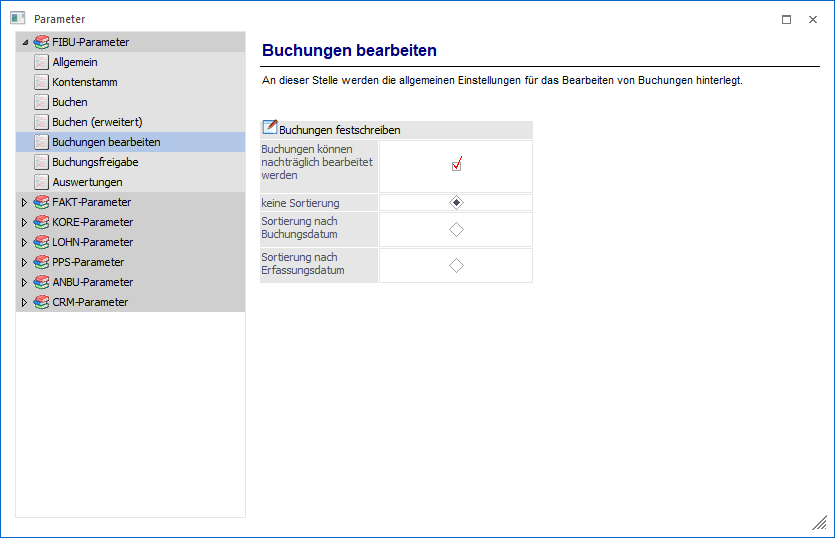
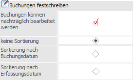

Über den Bereich "FIBU-Parameter - Buchungen bearbeiten" können Einstellungen für das Bearbeiten von Buchungen vorgenommen werden.
Achtung
Wenn es Ihre firmenspezifische Organisation zulässt, dann empfehlen wir aufgrund der Klarstellung in den GoBD vom 14.11.2014 die Buchungen sofort festzuschreiben und die Funktion "Buchungen bearbeiten" nicht zu verwenden!
Hinweis
Standardmäßig wird das Fenster in einem "Lesemodus" geöffnet, d.h. es können die bestehenden Einstellungen kontrolliert, Änderungen allerdings nicht durchgeführt werden. Hierfür muss zunächst mit Hilfe des Buttons "Bearbeiten" der "Bearbeitungsmodus" aktiviert werden. Alternativ kann diese Aktivierung auch über das Kontextmenü der rechten Maustaste (Funktion "Applikation xxx bearbeiten") erfolgen.

Buchungen festschreiben

Ø Buchungen können nachträglich bearbeitet werden
Ist diese Checkbox aktiviert, werden Buchungen nur temporär, d.h. in Form eines vorläufigen Stapels gespeichert.
Ø Festschreibung
Über die weiteren Radiobuttons kann eingestellt werden, ob beim Festschreiben von Buchungen:
ü nach Buchungsnummer sortiert (Option "keine Sortierung": die Reihenfolge bleibt also unverändert, und es wird bis zu einer bestimmten Buchungsnummer festgeschrieben)
ü nach Buchungsdatum sortiert, oder
ü nach Erfassungsdatum sortiert
werden soll.
Achtung
Wenn Buchungen einmal festgeschrieben wurden, dann können in diesem Bereich keine Änderung mehr durchgeführt werden.
Beispiel
Es wird nach "Buchungsdatum sortiert" und bis 31. Januar festgeschrieben. Danach kann der komplette Januar (mit Ausnahme des 31.) nicht mehr bearbeitet werden (es können weder Stornobuchungen durchgeführt, noch nachträgliche Buchungen erfasst werden).